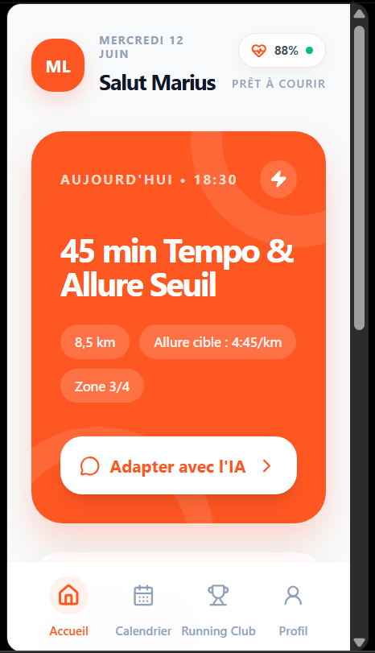
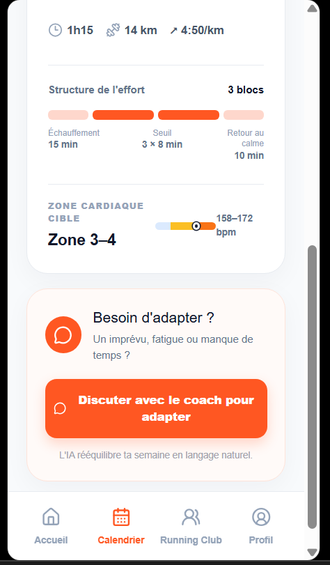
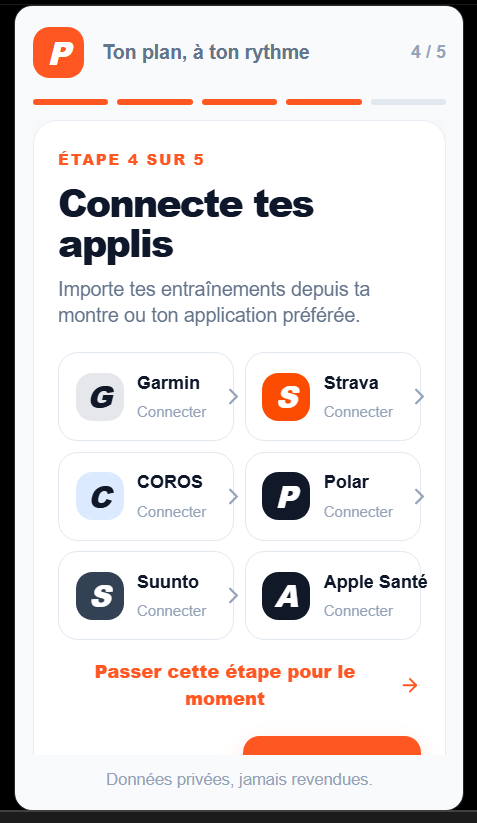
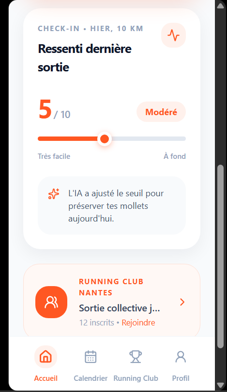
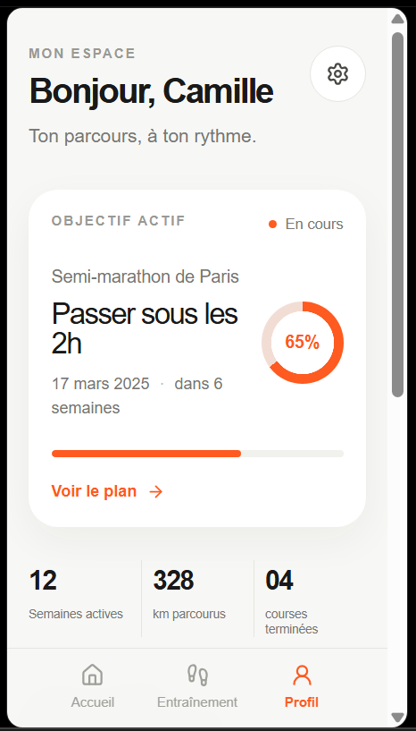

Boulot tard, nuit de 5h ou imprévu jeudi soir ? Arrête d'abandonner ton plan ou d'empiler les séances ratées. Parle au coach IA : il rééquilibre le reste de ta semaine sans te griller.


Voici ce qui se passe quand la vraie vie percute ta semaine d'entraînement. Choisis ta distance cible puis déclenche un imprévu :
Ce n'est pas un manque de volonté : c'est parce que les plans figés ne pardonnent aucun imprévu professionnel ou familial.
Découvre l'interface épurée de Riles : moins de 15 secondes par jour pour garder un plan toujours aligné avec ta forme.

Connecte Strava, Garmin ou Coros : l'IA analyse instantanément ton volume réel et tes zones cardiaques.
Un imprévu ? Clique sur « Adapter avec l'IA » depuis ton écran d'accueil et ajuste ta séance en 10 secondes.

Après chaque sortie, note ton ressenti en 1 glissement de doigt. L'IA ajuste le seuil suivant pour protéger tes jambes.

Suis ta progression réelle vers ton chrono cible sans jamais subir la pression d'un tableau Excel rigide.